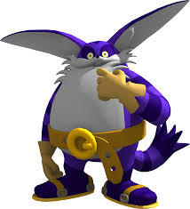
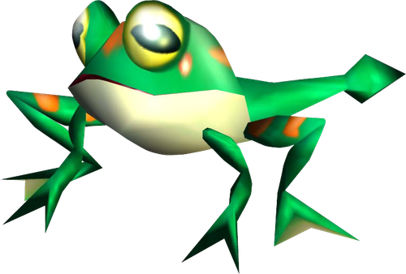

Other Friends
Other than Froggy Bigs friends include Cream the rabbit, and Amy Rose
Together these three make up team Rose first getting together in Sonic Heroes

The gentle giant of the Sonic franchise
Big first appeared In the game Sonic adventure as a story campaign character.
In contrast to the other campaign routes his gamplay revolved around fishing.
Minus the boss battle where he judo-flips an elder water god with a fishing rod
Its a relaxing change to the other routes which are more action-focused
Along with his debut game he also has appeared frequently in following Sonic games as cameos or as a playable character
The most notable in recent years is as a playable character in the upcoming Racing game Sonic Crossworlds
Froggy is Bigs best friend. Whenever they go missing He searches high and low until he finds him
Other than Froggy Bigs friends include Cream the rabbit, and Amy Rose
Together these three make up team Rose first getting together in Sonic Heroes